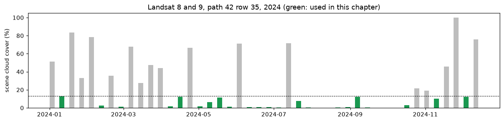
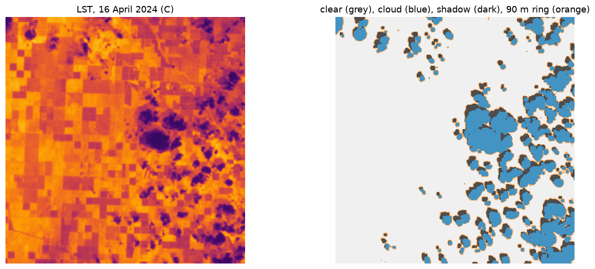
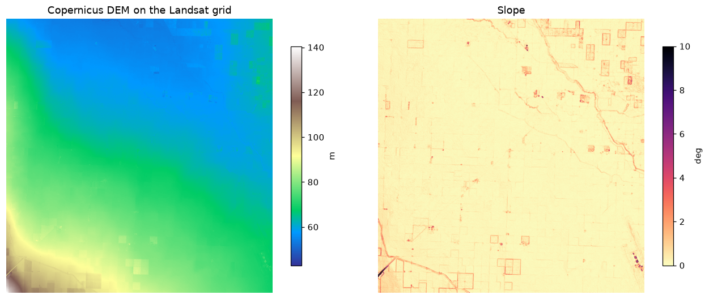

Building an Analysis-Ready Stack for Energy Balance Models
Every surface energy balance model starts from the same inputs: surface reflectance, land surface temperature, a cloud mask, elevation, land cover and the weather at the time of the image. Errors in any of them pass straight into the latent heat flux, which is computed as a residual, so preparing them carefully matters more than the choice of model. This notebook builds the input stack for one Landsat 8 scene step by step: finding scenes in a STAC catalogue, reading only the study window, applying the Collection 2 scale factors, decoding the quality band, adding elevation and crop type on the same grid, and interpolating hourly weather to the overpass. It then builds the same stack for every clear scene of 2024, which the later notebooks use.
ERA5 through the Open-Meteo archive; gridMET daily (notebook 02)
Where errors come from
Clouds and their edges. A thin cloud edge or a shadow is cool and dark, exactly what a cold anchor looks like. One missed cloud pixel picked as the cold anchor shifts every flux in the scene. Masks are therefore dilated by a few pixels.
Scaling. Collection 2 stores integers. Reflectance is DN 0.0000275 - 0.2, temperature DN 0.00341802 + 149.0 K. Forgetting the offset gives reflectance that is too high by 0.2 and albedo that is badly wrong.
Grids. DEM, crop map and Landsat must share one grid. Elevation is resampled bilinearly, categorical crop codes with the nearest neighbour.
Time. Landsat crosses the equator at about 10:00 to 10:15 local solar time; over central California the overpass is near 18:30 UTC. Weather must be taken at that moment, not as a daily mean.
Collection 2 Level-2 in brief
USGS processes every Landsat 8 and 9 scene into surface reflectance (LaSRC) and surface temperature (a single-channel algorithm on band 10 with MODTRAN atmospheric profiles and ASTER emissivity). Both are delivered as Cloud-Optimized GeoTIFFs, so a STAC client can read a small window without downloading the whole 7,600 x 7,800 pixel scene.
Inputs with GeoLattice
Step
Tool
Find scenes
pystac_client on Microsoft Planetary Computer (landsat-c2-l2)
all 2024 scenes with less than 13 % cloud (27 scenes); the main scene is LC08_L2SP_042035_20240705_02_T1
Copernicus DEM GLO-30
30 m elevation, two 1 degree tiles
USDA Cropland Data Layer 2024
30 m crop types from CropScape
ERA5 hourly and daily
Open-Meteo archive, at 36.425 N, 120.10 W
The window is 120.25 to 119.95 W and 36.30 to 36.55 N, the Westside San Joaquin Valley around Five Points, Fresno County. Downloads are cached under Data/08_remote_sensing/08_12_surface_energy_balance/westside/.
Contents
Setup
Finding the scenes
Reading a window and applying scale factors
Decoding the quality band
Overpass time and sun angles
Elevation on the Landsat grid
Crop types on the Landsat grid
Weather at the overpass
Saving the stack
Every clear scene of 2024
Summary and exercises
Setup
Installation. This notebook needs installation option 5 (core, spatial analysis, spatial statistics, geostatistics and remote sensing): pip install "geolattice[remote-sensing]". See “Installation options” in the GeoLattice README.
Code
import warnings # warning controlwarnings.filterwarnings("ignore") # hide routine library warningsfrom pathlib import Path # file pathsimport matplotlib.pyplot as plt # figuresimport numpy as np # arraysimport pandas as pd # tablesimport rioxarray # noqa: F401 (registers the .rio accessor)import xarray as xr # labelled rastersimport geolattice # GeoLatticeimport geolattice.rsense.surface_energy_balance as seb # energy balance and ET modelsimport seb_data as sd # chapter helper: downloads, caches and loads the scenesplt.rcParams.update({"figure.dpi": 110}) # figure resolutionOUT = Path("outputs") # results written by this chapterOUT.mkdir(exist_ok=True) # create it if neededprint("GeoLattice", geolattice.__version__, "| data folder", sd.DATA.relative_to(sd.DATA.parents[3])) # versions and pathsimport planetary_computer # signs Planetary Computer asset URLsfrom pystac_client import Client # STAC searchfrom scipy import ndimage # mask dilationSITE = sd.WESTSIDE # study area: bounding box, centre and namecatalog = Client.open(sd.STAC, modifier=planetary_computer.sign_inplace) # Planetary Computer STAC API
GeoLattice 0.3.49 | data folder GeoLattice/Data/08_remote_sensing/08_12_surface_energy_balance
Finding the scenes
A STAC search returns every Landsat 8 and 9 Level-2 scene that touches the box in 2024. The window lies on path 42 row 35 (and, at its edges, the neighbouring paths), so the search is filtered to that path and row to keep one viewing geometry.
Code
items = catalog.search(collections=["landsat-c2-l2"], bbox=SITE["bbox"], datetime="2024-01-01/2024-12-31", query={"platform": {"in": ["landsat-8", "landsat-9"]}}).item_collection() # every 2024 scenescenes = pd.DataFrame([{"id": i.id, "date": i.datetime.date(), "platform": i.properties["platform"],"cloud_cover": i.properties["eo:cloud_cover"]} for i in items]) # one row per scenescenes = scenes[scenes.id.str.contains("_042035_")].sort_values("date").reset_index(drop=True) # path 42 row 35 onlyprint(len(scenes), "scenes on path 42 row 35;", (scenes.cloud_cover <13).sum(), "with less than 13 % cloud") # countsfig, ax = plt.subplots(figsize=(12, 3)) # one panelax.bar(pd.to_datetime(scenes.date), scenes.cloud_cover, width=4, color=np.where(scenes.cloud_cover <13, "#1a9850", "#bdbdbd")) # cloud cover per dateax.axhline(13, color="k", lw=0.7, ls="--"); ax.set_ylabel("scene cloud cover (%)") # thresholdax.set_title("Landsat 8 and 9, path 42 row 35, 2024 (green: used in this chapter)"); plt.tight_layout(); plt.show() # draw
44 scenes on path 42 row 35; 27 with less than 13 % cloud

Landsat 8 and 9 together give an image every 8 days. Winter storms cloud out most January to March and November to December dates; from April to October almost every pass is clear, which is why the Central Valley is a good place to learn these models. The list of chosen scenes is kept in sd.SEASON_2024.
Reading a window and applying scale factors
The main scene is 5 July 2024. Its STAC item lists one asset per band; the metadata give the projection (UTM zone 11N) and the acquisition time.
Code
item = catalog.get_collection("landsat-c2-l2").get_item(sd.MAIN_SCENE) # one sceneepsg = item.properties.get("proj:epsg") orint(item.properties["proj:code"].split(":")[1]) # its UTM zoneprint(item.id, "| EPSG", epsg, "|", item.properties["datetime"]) # identityprint("assets:", ", ".join(sorted(k for k in item.assets if k notin ("rendered_preview", "tilejson")))) # bands and files
from pyproj import Transformer # coordinate transformationsto_utm = Transformer.from_crs(4326, epsg, always_xy=True) # lon/lat -> UTMb = SITE["bbox"] # west, south, east, northxs, ys = to_utm.transform([b[0], b[2], b[0], b[2]], [b[1], b[1], b[3], b[3]]) # the four corners in UTMx0, x1, y0, y1 =min(xs), max(xs), min(ys), max(ys) # window that covers the boxred_dn = rioxarray.open_rasterio(item.assets["red"].href).squeeze("band", drop=True) # lazy: nothing read yetprint("full scene:", dict(red_dn.sizes)) # whole scene sizered_dn = red_dn.sel(x=slice(x0, x1), y=slice(y1, y0)).load() # read only the windowprint("window:", dict(red_dn.sizes), "| dtype", red_dn.dtype, "| DN range", int(red_dn.min()), "to", int(red_dn.max())) # what was read
full scene: {'y': 7951, 'x': 7821}
window: {'y': 953, 'x': 926} | dtype uint16 | DN range 7063 to 34414
Only the window (about 3 % of the scene) is transferred. The values are 16-bit integers; the Collection 2 scale factors turn them into reflectance and kelvin. A DN of 0 is fill.
Without the offset, the red reflectance would be about 0.2 too high and the surface temperature 149 K too low: errors that no later step can repair.
Decoding the quality band
QA_PIXEL packs one flag per bit. Bits 0 to 5 mark fill, dilated cloud, cirrus, cloud, cloud shadow and snow; bit 7 marks water. A pixel is clear when none of bits 0 to 5 is set.
Code
qa = rioxarray.open_rasterio(item.assets["qa_pixel"].href).squeeze("band", drop=True).sel(x=slice(x0, x1), y=slice(y1, y0)).load().astype("int64") # QA_PIXELBITS = {"fill": 0, "dilated cloud": 1, "cirrus": 2, "cloud": 3, "cloud shadow": 4, "snow": 5, "clear": 6, "water": 7} # CFMask bitsflags = pd.Series({name: float(((qa >> bit) &1).mean()) for name, bit in BITS.items()}) # share of pixels with each flag(100* flags).round(3).to_frame("% of window") # table
% of window
fill
0.000
dilated cloud
0.000
cirrus
0.000
cloud
0.000
cloud shadow
0.000
snow
0.000
clear
100.000
water
0.095
5 July is almost perfectly clear. To see why masks matter, the same decoding on a partly cloudy scene (16 April 2024, 12 % cloud over the whole scene) shows clouds, their shadows and the cool fringes around them.
Code
cloudy = sd.load_scene("LC08_L2SP_042035_20240416_02_T1") # cached stack of a partly cloudy scene (raw QA not kept)it2 = catalog.get_collection("landsat-c2-l2").get_item(cloudy.attrs["scene_id"]) # its STAC itemqa2 = rioxarray.open_rasterio(it2.assets["qa_pixel"].href).squeeze("band", drop=True).sel(x=slice(x0, x1), y=slice(y1, y0)).load().astype("int64") # its QA_PIXELcloud = (((qa2 >>3) &1) | ((qa2 >>1) &1)).astype(bool) # cloud or dilated cloudshadow = ((qa2 >>4) &1).astype(bool) # cloud shadowbuffer= ndimage.binary_dilation((cloud | shadow).values, iterations=3) # three more pixels (90 m) around themlst2 = cloudy.lst -273.15# its surface temperature, Cring =buffer&~(cloud | shadow).values # the 90 m ring the dilation addsprint(f"cloud {cloud.mean().item():.1%}, shadow {shadow.mean().item():.1%}, dilation adds {ring.mean():.1%} of the window") # sizesprint(f"median LST: clear {float(lst2.where(~buffer).median()):.1f} C | added ring {float(lst2.where(ring).median()):.1f} C | "f"shadow {float(lst2.where(shadow).median()):.1f} C | cloud {float(lst2.where(cloud).median()):.1f} C") # temperaturesfig, ax = plt.subplots(1, 2, figsize=(13, 5)) # two mapsax[0].imshow(lst2, cmap="inferno", vmin=0, vmax=45); ax[0].set_title("LST, 16 April 2024 (C)") # temperatureshow = np.where(cloud, 3, np.where(shadow, 2, np.where(ring, 1, 0))) # 0 clear, 1 ring, 2 shadow, 3 cloudax[1].imshow(show, cmap=plt.matplotlib.colors.ListedColormap(["#f0f0f0", "#fdae61", "#4d4d4d", "#4393c3"]), vmin=0, vmax=3, interpolation="nearest") # masksax[1].set_title("clear (grey), cloud (blue), shadow (dark), 90 m ring (orange)") # legend in the titlefor a in ax: # both maps a.axis("off") # hide axesplt.tight_layout(); plt.show() # draw
cloud 16.4%, shadow 9.8%, dilation adds 5.1% of the window
median LST: clear 29.8 C | added ring 28.6 C | shadow 24.8 C | cloud 18.7 C

Clouds and their shadows are far cooler than the clear land, and the ring of pixels the dilation adds is cooler than the clear median too. Those ring pixels look like well watered vegetation to an anchor search. sd.read_landsat excludes every flagged pixel (bits 0 to 5), which already includes CFMask’s own dilated cloud bit; notebook 05 adds a homogeneity test to the anchor search for the same reason.
Overpass time and sun angles
The scene centre time and the sun elevation and azimuth come with the metadata. seb.scene_geometry reads them from STAC properties or from a Landsat MTL file, and seb.solar_position computes the same angles from the time and position, which is a useful check (and what you need for sensors without these fields).
Code
geo = seb.scene_geometry(item.properties) # from the STAC propertiespos = seb.solar_position(SITE["lat"], SITE["lon"], geo["datetime"]) # computed at the window centrelocal = geo["datetime"] + pd.Timedelta(hours=SITE["utc_offset"]) # Pacific daylight timepd.DataFrame({"metadata (scene centre)": [geo["sun_elevation"], geo["sun_azimuth"]], # what USGS reports"computed (window centre)": [float(pos["elevation"]), float(pos["azimuth"])]}, # what seb computes index=["sun elevation (deg)", "sun azimuth (deg)"]).round(2).assign( # table note=[f"overpass {geo['datetime']:%H:%M} UTC = {local:%H:%M} local", f"day {geo['doy']}, Earth-Sun factor dr = {geo['dr']:.4f}"]) # time and distance
metadata (scene centre)
computed (window centre)
note
sun elevation (deg)
66.53
65.93
overpass 18:33 UTC = 11:33 local
sun azimuth (deg)
118.61
118.57
day 187, Earth-Sun factor dr = 0.9671
The metadata refer to the centre of the whole scene, about 90 km from the window centre, so the sun elevation differs by about 0.6 degree and the azimuth by less; the computed angles are the right ones for the window. dr is below 1 in early July because the Earth is near its farthest point from the sun (aphelion), so sunlight is about 3 % weaker than the annual mean.
Elevation on the Landsat grid
sd.dem_on merges the Copernicus DEM tiles around the window and reprojects them bilinearly to the Landsat grid. Elevation sets air pressure (needed for air density and the psychrometric constant), and slope and aspect change the incoming sunshine on hillsides.
Code
lst_grid = lst.rio.write_crs(epsg) # the Landsat grid with its CRSdem = sd.dem_on(lst_grid, SITE) # elevation on that grid, mslope, aspect = seb.slope_aspect(dem) # degreespressure = seb.pressure_from_elevation(dem) # kPaprint(f"elevation {float(dem.min()):.0f} to {float(dem.max()):.0f} m | slope above 5 deg: {float((slope >5).mean()):.1%} | "f"pressure {float(pressure.min()):.2f} to {float(pressure.max()):.2f} kPa") # rangesfig, ax = plt.subplots(1, 2, figsize=(12, 4.8)) # two mapsim = ax[0].imshow(dem, cmap="terrain"); plt.colorbar(im, ax=ax[0], shrink=0.8, label="m"); ax[0].set_title("Copernicus DEM on the Landsat grid") # elevationim = ax[1].imshow(slope, cmap="magma_r", vmax=10); plt.colorbar(im, ax=ax[1], shrink=0.8, label="deg"); ax[1].set_title("Slope") # slopefor a in ax: # both maps a.axis("off") # hide axesplt.tight_layout(); plt.show() # draw
elevation 43 to 140 m | slope above 5 deg: 0.0% | pressure 99.65 to 100.79 kPa

The valley floor is nearly flat, so terrain corrections of radiation are small here; they matter in hilly scenes and are included in notebook 03 for completeness.
Crop types on the Landsat grid
The Cropland Data Layer is in USA Contiguous Albers (EPSG:5070). sd.cdl_on asks the CropScape service for a clip, then reprojects it to the Landsat grid with the nearest neighbour so every pixel keeps a valid class code.
Code
cdl = sd.cdl_on(lst_grid, SITE, 2024) # CDL 2024 on the Landsat gridcodes, counts = np.unique(cdl.values, return_counts=True) # pixels per classshare = pd.Series(100* counts / counts.sum(), index=codes).sort_values(ascending=False) # percent per classtop = share.head(12) # the most common classespd.DataFrame({"class": [sd.cdl_name(c) for c in top.index], "% of window": top.round(1).values}, index=top.index) # table
class
% of window
204
Pistachios
18.4
61
Fallow/idle cropland
16.5
75
Almonds
9.2
54
Tomatoes
9.0
69
Grapes
6.3
176
Grassland/pasture
5.6
24
Winter wheat
5.5
2
Cotton
4.7
208
Garlic
2.1
122
Developed, low intensity
2.1
121
Developed, open space
1.9
51
Chickpeas
1.9
Pistachios and almonds (permanent orchards), fallow land, tomatoes and grapes dominate. Fallow land is a large share of the Westside in recent years, as surface water deliveries were cut and groundwater pumping restricted: exactly the contrast between irrigated and dry fields that the anchors need.
Weather at the overpass
seb.weather_open_meteo returns ERA5 reanalysis from the free Open-Meteo archive (no key): hourly air temperature, humidity, dew point, wind at 10 m, shortwave radiation and pressure, in UTC. ERA5 is a 0.25 degree (about 25 km) product, so it describes the regional air rather than any single field. Notebook 02 compares it with gridMET and discusses what that means over irrigated land.
Code
day = geo["datetime"].strftime("%Y-%m-%d") # the overpass datew = sd.weather(SITE, day, day) # cached Open-Meteo hourly and daily tableshourly = w["hourly"] # hourly ERA5, UTCwx = seb.interpolate_weather(hourly, geo["datetime"]) # linear interpolation to the overpass timefig, ax = plt.subplots(1, 3, figsize=(15, 3.6)) # three panelslocal_h = hourly.index + pd.Timedelta(hours=SITE["utc_offset"]) # local time axisfor a, col, lab inzip(ax, ["temperature_2m", "shortwave_radiation", "wind_speed_10m"], ["air temperature (C)", "shortwave (W/m2)", "wind at 10 m (m/s)"]): # each variable a.plot(local_h, hourly[col], "o-", ms=3); a.axvline(local, color="r", lw=1) # hourly series and overpass a.set_title(lab); a.tick_params(axis="x", rotation=30) # labelsplt.suptitle(f"ERA5 on {day} (local time), red line: Landsat overpass"); plt.tight_layout(); plt.show() # drawwx[["temperature_2m", "relative_humidity_2m", "dew_point_2m", "wind_speed_10m", "shortwave_radiation", "surface_pressure"]].round(2) # values at the overpass
ERA5 hourly values are averages over the hour ending at the time stamp, so linear interpolation between the two neighbouring hours gives the best estimate at 18:33 UTC. The models need vapour pressure (from the dew point) and wind at 2 m and at the 200 m blending height, where wind is assumed independent of the surface below (notebook 04).
Code
ea =float(seb.actual_vapour_pressure(t_dew_c=wx["dew_point_2m"])) # vapour pressure, kPau2 =float(seb.wind_2m(wx["wind_speed_10m"], 10.0)) # FAO-56 log profile from 10 m to 2 mu200 =float(seb.wind_at_blending_height(u2, z=2.0)) # over grass, extended to 200 mes =float(seb.saturation_vapour_pressure(wx["temperature_2m"])) # saturation vapour pressure, kPaprint(f"vapour pressure {ea:.2f} kPa, vapour pressure deficit {es - ea:.2f} kPa") # humidity termsprint(f"wind: {wx['wind_speed_10m']:.2f} m/s at 10 m -> {u2:.2f} m/s at 2 m -> {u200:.2f} m/s at 200 m") # wind profile
vapour pressure 0.70 kPa, vapour pressure deficit 6.62 kPa
wind: 2.16 m/s at 10 m -> 1.61 m/s at 2 m -> 3.12 m/s at 200 m
A vapour pressure deficit above 6 kPa is extreme; typical summer afternoons in the valley reach 3 to 5 kPa. Together with the strong sunshine, it drives the very high reference ET of this day.
Saving the stack
All layers share one grid, so they go into one xr.Dataset with the overpass weather and geometry as attributes. sd.load_scene does exactly this (plus the thermal radiance terms used in notebook 03) and caches the result as compressed NetCDF; here the hand-built layers are compared with the cached stack.
Code
ds = sd.load_scene(sd.MAIN_SCENE) # the cached stack (built on first use)same = {"red": float(np.nanmax(np.abs(ds.red - red.astype("float32")))), # hand-built vs cached reflectance"lst": float(np.nanmax(np.abs(ds.lst - lst.astype("float32")))), # surface temperature"dem": float(np.nanmax(np.abs(ds.dem - dem))), # elevation"cdl": int((ds.cdl != cdl).sum())} # crop codes that differprint("largest differences, hand-built vs sd.load_scene:", same) # should be zeroprint(list(ds.data_vars)) # layers{k: ds.attrs[k] for k in ["scene_id", "datetime", "sun_elevation", "dr", "t_air_c", "ea_kpa", "u10", "rs_wm2", "tmax_c", "tmin_c", "rs_daily_mj"]} # key attributes
Notebook 10 builds a seasonal ET record from every clear 2024 scene. The stacks are built here in parallel processes (each scene takes one to two minutes to download the first time; later runs read the cache).
Code
from concurrent.futures import ProcessPoolExecutor # parallel downloadswith ProcessPoolExecutor(4) as pool: # four scenes at a time paths =list(pool.map(sd.build_scene, sd.SEASON_2024)) # build or find every cached stackrows = [] # one summary row per scenefor p in paths: # every stackwith xr.open_dataset(p) as s: # read lazily rows.append({"scene": s.attrs["scene_id"], "date": pd.Timestamp(s.attrs["datetime"]).date(),"platform": s.attrs["platform"], "clear %": round(100*float(s.clear.mean()), 1),"air C": round(s.attrs["t_air_c"], 1), "daily max C": s.attrs["tmax_c"],"MB": round(Path(p).stat().st_size /2**20, 1)}) # summaryseason = pd.DataFrame(rows) # tableprint(len(season), "stacks,", round(season.MB.sum()), "MB in total") # cache sizeseason.set_index("date") # table
27 stacks, 563 MB in total
scene
platform
clear %
air C
daily max C
MB
date
2024-01-11
LC08_L2SP_042035_20240111_02_T1
landsat-8
99.9
8.5
13.7
20.0
2024-02-12
LC08_L2SP_042035_20240212_02_T1
landsat-8
100.0
12.6
15.9
20.5
2024-02-28
LC08_L2SP_042035_20240228_02_T1
landsat-8
100.0
15.6
19.9
20.9
2024-04-08
LC09_L2SP_042035_20240408_02_T1
landsat-9
100.0
16.5
21.0
20.2
2024-04-16
LC08_L2SP_042035_20240416_02_T1
landsat-8
77.0
20.3
24.2
21.9
2024-05-02
LC08_L2SP_042035_20240502_02_T1
landsat-8
100.0
25.5
29.4
20.8
2024-05-10
LC09_L2SP_042035_20240510_02_T1
landsat-9
100.0
29.3
33.3
21.0
2024-05-18
LC08_L2SP_042035_20240518_02_T1
landsat-8
100.0
28.8
34.6
21.0
2024-05-26
LC09_L2SP_042035_20240526_02_T1
landsat-9
100.0
25.1
31.2
21.1
2024-06-11
LC09_L2SP_042035_20240611_02_T1
landsat-9
100.0
36.0
41.7
21.1
2024-06-19
LC08_L2SP_042035_20240619_02_T1
landsat-8
100.0
31.5
36.3
20.9
2024-06-27
LC09_L2SP_042035_20240627_02_T1
landsat-9
100.0
33.4
40.5
21.2
2024-07-05
LC08_L2SP_042035_20240705_02_T1
landsat-8
100.0
39.8
46.6
21.2
2024-07-21
LC08_L2SP_042035_20240721_02_T1
landsat-8
100.0
35.7
44.5
21.1
2024-07-29
LC09_L2SP_042035_20240729_02_T1
landsat-9
100.0
31.8
38.5
21.0
2024-08-06
LC08_L2SP_042035_20240806_02_T1
landsat-8
100.0
37.7
45.5
20.9
2024-08-14
LC09_L2SP_042035_20240814_02_T1
landsat-9
100.0
33.6
38.8
20.9
2024-08-22
LC08_L2SP_042035_20240822_02_T1
landsat-8
100.0
30.2
38.0
20.9
2024-08-30
LC09_L2SP_042035_20240830_02_T1
landsat-9
100.0
33.0
40.3
20.6
2024-09-07
LC08_L2SP_042035_20240907_02_T1
landsat-8
100.0
37.7
42.3
20.9
2024-09-15
LC09_L2SP_042035_20240915_02_T1
landsat-9
100.0
29.3
36.3
21.1
2024-09-23
LC08_L2SP_042035_20240923_02_T1
landsat-8
100.0
32.5
38.7
20.9
2024-10-01
LC09_L2SP_042035_20241001_02_T1
landsat-9
100.0
32.2
38.9
20.8
2024-10-09
LC08_L2SP_042035_20241009_02_T1
landsat-8
100.0
31.5
37.7
20.8
2024-10-17
LC09_L2SP_042035_20241017_02_T1
landsat-9
100.0
24.4
28.0
20.9
2024-11-10
LC08_L2SP_042035_20241110_02_T1
landsat-8
24.8
18.6
23.4
20.2
2024-12-04
LC09_L2SP_042035_20241204_02_T1
landsat-9
99.8
14.4
18.4
20.1
Inside the window only two of the 27 scenes are partly cloudy: 16 April (77 % clear) and 10 November (25 % clear). The scene cloud cover in the metadata describes the whole 185 km scene, so it can be high while a small window is clear, and the reverse. The later notebooks drop cloudy pixels with the clear layer, and notebook 10 decides which dates are usable for each pixel.
Summary and exercises
STAC search plus Cloud-Optimized GeoTIFFs give a small study window from each scene without downloading whole scenes: 27 Landsat 8 and 9 scenes of 2024 passed the 13 % cloud filter on path 42 row 35.
Collection 2 values must be scaled (DN 0.0000275 - 0.2 for reflectance, DN 0.00341802 + 149 K for temperature); the offset matters.
QA_PIXEL bits 0 to 5 flag fill, dilated cloud, cirrus, cloud, shadow and snow. Cloud fringes are cool and would make false cold anchors, so masks are generous.
Elevation (bilinear) and crop codes (nearest) go on the Landsat grid; weather is interpolated to the overpass and wind moved to 2 m and 200 m.
sd.load_scene reproduces all of this and caches one NetCDF per scene. Masks are saved as plain integers without a fill value: a _FillValue of 0 inherited from QA_PIXEL would turn every cloudy 0 into a missing value that reads back as clear.
Exercises
Count, for every 2024 scene, the share of clear pixels inside the window rather than the scene cloud cover from the metadata. Which scenes would you drop?
Dilate the 16 April cloud mask by 1, 3 and 6 pixels and plot the median LST of each added ring. How far from the cloud does the cooling reach?
Compute the sun elevation with seb.solar_position at the four corners of the window. How large is the difference across 28 km?
Download a week of hourly ERA5 around 5 July (sd.weather(SITE, "2024-07-01", "2024-07-08")) and plot the air temperature at every overpass hour. How unusual was 5 July?